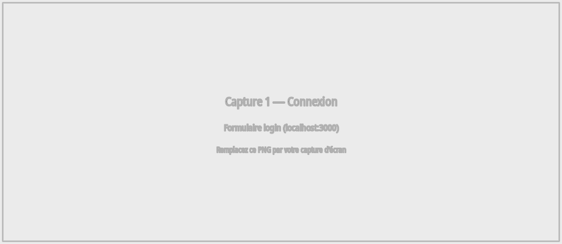
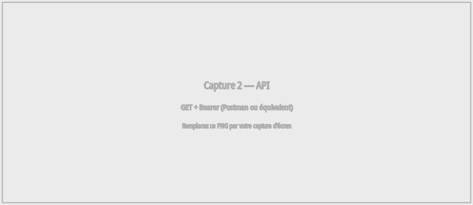
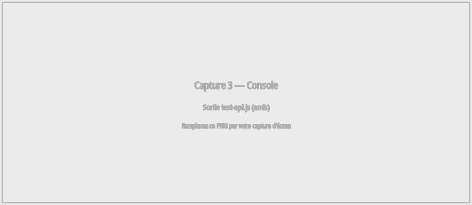
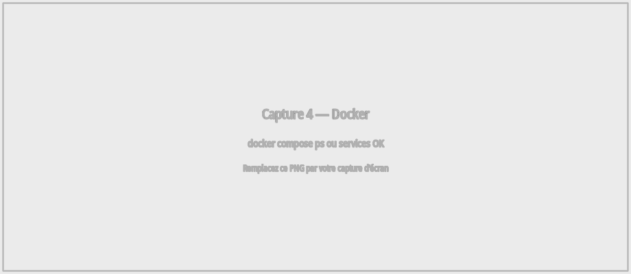
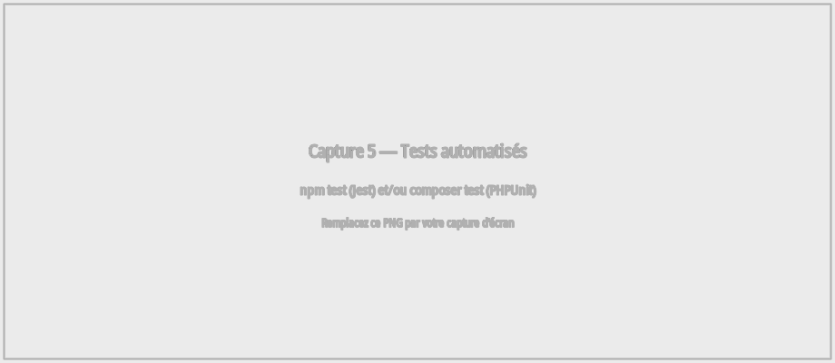
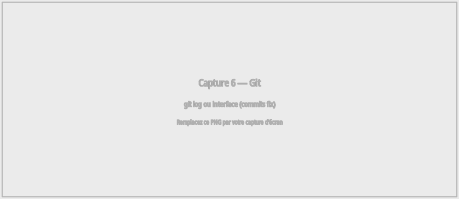

L’application est découpée en backend (API REST Symfony 7, JWT, PostgreSQL) et frontend (React). Le démarrage est documenté dans le README (Docker Compose ou environnement local). Ce document synthétise la stratégie de test pratiquée sur le projet, les constats, et les corrections identifiables dans l’historique du dépôt Git. Les preuves visuelles demandées pour le rendu sont regroupées en section 6 (Annexes).
Les parcours utilisateur (inscription, connexion, publications, groupes, événements, amis, etc.) sont validés manuellement via le navigateur, avec le backend joignable (par exemple http://localhost:8000/api) et le frontend (http://localhost:3000). Les appels API peuvent aussi être vérifiés avec des outils externes (Postman, curl) en transmettant l’en-tête Authorization: Bearer <token> après authentification.
Le fichier frontend/public/test-api.js regroupe des appels de débogage vers plusieurs endpoints liés aux amis (/api/amis, demandes, envoyées, suggestions). Il s’exécute dans la console des outils de développement du navigateur et permet de contrôler rapidement les codes de statut HTTP et le format des réponses JSON.
Le paquet symfony/test-pack (PHPUnit 12) est installé. Les tests vivent sous backend/tests/ :
En environnement test, Doctrine utilise une base SQLite (var/test.db, voir config/packages/test/doctrine.yaml). Il faut l’extension PHP pdo_sqlite (souvent le paquet php8.x-sqlite3). Les clés JWT manquantes sont générées automatiquement au premier lancement des tests (tests/bootstrap.php).
Commande : cd backend && composer test (alias de php bin/phpunit -c phpunit.dist.xml).
Fichiers *.test.js sous frontend/src/ : LoginPage.test.js, RegisterPage.test.js, SearchBar.test.js, services/api.test.js. Le fichier setupTests.js charge @testing-library/jest-dom et un polyfill TextEncoder pour React Router 7 sous Jest. La configuration Jest du package.json redirige les résolutions react-router-dom / react-router/dom vers les builds CJS, et autorise la transformation Babel du module axios (ESM).
Commande : cd frontend && CI=true npm test -- --watchAll=false
| Type | État dans le dépôt | Commentaire |
|---|---|---|
| Tests Jest (frontend) | 8 tests, 4 suites | Pages login/register, barre de recherche, intercepteur axios ; npm test |
| Tests PHPUnit (backend) | 15 tests (12 fonctionnels + 3 unitaires) | API auth, publications, amis, validation User ; composer test ; SQLite + pdo_sqlite |
| Tests manuels / API | Pratiqués | Parcours UI + script test-api.js pour les endpoints amis |
Le tableau suivant reprend des commits représentatifs du dépôt, en mettant l’accent sur les corrections (fix) et les évolutions majeures. Les identifiants courts permettent de retrouver le détail avec git show <hash>.
| Commit | Description | Nature |
|---|---|---|
| 8fb039d | Correction du champ email dans le formulaire de connexion (fix(login)) | Correction fonctionnelle UI |
| 026cbe2 | Réorganisation du code dans le dossier frontend | Correction / structure |
| 449d80e | Réorganisation du dossier frontend | Correction / structure |
| b1f7d28 | Optimisation des performances, backend Docker en mode production | Amélioration déploiement / perf |
| 938c0ca | Fonctionnalités événements (entités, API, calendrier, inscription) | Évolution fonctionnelle |
| 392fe1c | Synchronisation complète du projet (backend, frontend, docs, Docker) | Intégration / livraison |
Le projet combine désormais des tests automatisés côté API (PHPUnit, flux JWT et ressources métier) et côté interface (Jest, formulaires et recherche), complétés par des tests manuels et le script test-api.js pour les endpoints « amis ». La couverture peut encore être étendue (autres contrôleurs, pages React, tests E2E). Les corrections listées en section 4 rappellent notamment la correction du login (email), la structuration du frontend, Docker et les événements.
Export PDF : depuis le navigateur, « Imprimer → Enregistrer au format PDF », ou en ligne de commande avec Chrome/Chromium : --headless --print-to-pdf=fichier.pdf fichier.html.
Chaque figure correspond à une épreuve de test ou à un élément de correction / outillage. Des images gabarit (fichiers PNG dans le dossier docs/annexes/) sont fournies : remplacez-les par vos propres captures en conservant le même nom de fichier, puis régénérez le PDF pour que le document final montre vos écrans réels.





